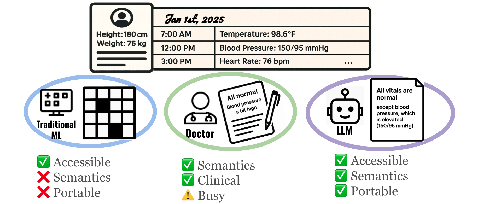
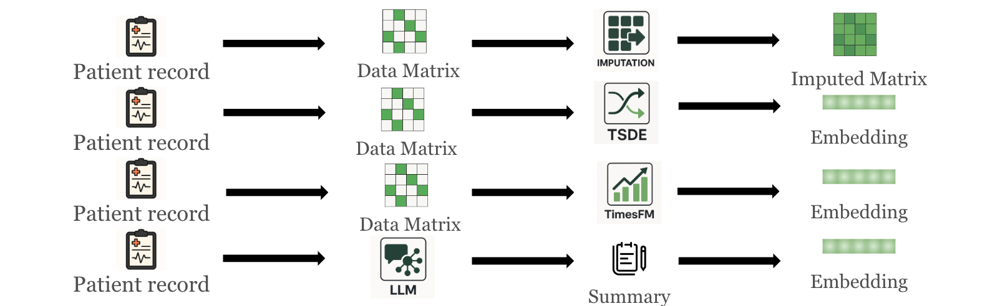
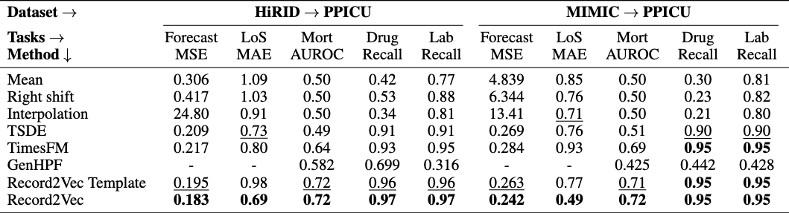
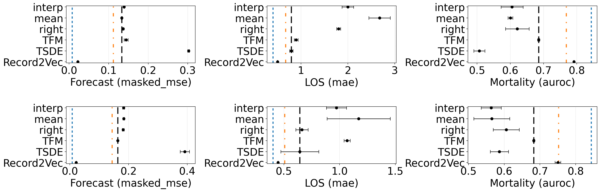
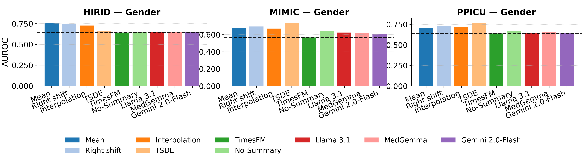

This work proposes Record2Vec, a summarize-then-embed pipeline using frozen Large Language Models (LLMs) to map irregular ICU time series into concise, semantic natural language summaries. These summaries are then embedded into fixed-length vectors, creating highly portable patient representations. Evaluated across MIMIC-IV, HiRID, and PPICU datasets, Record2Vec matches in-distribution performance of state-of-the-art models while significantly reducing performance degradation under distribution shifts across different hospitals.

Deploying clinical machine learning is slow and brittle. Teams build a model at Hospital A, tune features, and attempt deployment. However, moving the model to Hospital B introduces distribution, population, and incidence shifts due to differing lab measurement policies and disease prevalence. These shifts often degrade model performance, forcing engineers to undergo lengthy recalibration cycles.
The status quo in healthcare treats the model as the object that must be transferred, often relying on data interoperability standards (like OMOP or FHIR) that standardize formats but don't guarantee predictive stability. We adopt a complementary thesis: portable input representations enable portable models. If heterogeneous electronic medical records can be mapped into a semantically aligned, site-agnostic interface, predictors will require substantially less site-specific adaptation.
Clinicians already solve the interoperability problem naturally. During shift changes, physicians interpret heterogeneous measurements through narrative handoffs that foreground salient context while abstracting away local idiosyncrasies. Record2Vec mimics this process using language as an information transformation layer.
Formally, let the irregular ICU record for a stay $i$ at site $s$ over a 48-hour window be denoted as $\mathcal{R}_{i}^{(s)}=\{(c,\{(t_{k},v_{k})\}_{k=1}^{K_{c}}):c\in\mathcal{C}^{(s)}\}$, which is a dictionary from clinical concepts $c$ to time-value pairs. Rather than forcing this irregular record into a rigid numerical grid, we apply a summarize-then-embed framework:

Figure 2. Methods to generate medical-record representations: imputation pipeline, self-supervised TS representation (TSDE), TS foundation model (TimesFM), and Record2Vec (LLM summary followed by text embedding).We rigorously evaluated Record2Vec across three large ICU cohorts (MIMIC-IV, HiRID, PPICU) on 15 tasks including forecasting, mortality prediction, length of stay, and drug/lab recommendations. Record2Vec achieves the strongest in-distribution results overall, winning 13 of 15 tasks and proving that language-mediated input yields robust utility without tailoring architectures to a specific site.
When evaluated across hospitals, grid imputations degrade sharply under shift, and several classification scores collapse toward chance. In contrast, Record2Vec heavily mitigates these performance drops, winning 10 out of 10 transfer columns (with two ties by TimesFM). By standardizing heterogeneous coding choices and sampling practices into a shared clinical language, Record2Vec strips site-specific artifacts and preserves signals crucial for mortality and treatment prediction.

Table 1. Transfer Learning Results. Record2Vec maintains robust predictive power across varying ICU datasets without requiring end-to-end retraining.Hospitals outside of large medical centers often lack sufficient patient data to train high-performing models from scratch. Because the generated representations are already semantically aligned, Record2Vec requires drastically fewer samples to achieve generalization. We found that pre-training on HiRID or MIMIC and fine-tuning on as few as 16 randomly selected PPICU samples allows the adapted Record2Vec models to approach the in-distribution reference models trained on tens of thousands of samples.

Figure 3. Few-shot finetuning with 16 labeled target samples for mortality prediction (RQ5) shown across six transfer settings. All tasks are reported the same metric as previous section: Forecast: masked mse, LOS: mae, Mortality: AUROC. The first row is the result of Hirid → Ppicu and the second row is Mimic → Ppicu. Reference lines: blue = best in-distribution upper bound, orange = best pre-finetune result, black = best finetuned baseline. Record2Vec surpassed baselines with a large gap, reaching comparable performance to in-distribution.A critical concern with portable representations is demographic data leakage. We found no evidence that Record2Vec increases demographic leakage risk. Gender prediction collapses to a constant baseline for all methods, and Record2Vec’s age error is similar to or higher than baselines. Because the frozen summarizer and text encoder emphasize clinical states, trends, and recent interventions, they do not amplify demographic signals beyond what is explicitly required, keeping demographic recoverability low while preserving clinical utility.

Figure 4. In-distribution privacy prediction on Gender across three ICU datasets. Record2Vec achieves comparable or reduced privacy leakage compared to traditional imputation baselines.@inproceedings{ji2026record2vec,
title = {Can We Generate Portable Representations for Clinical Time Series Data Using LLMs?},
author = {Zongliang Ji and Yifei Sun and Andre Amaral and Anna Goldenberg and Rahul G. Krishnan},
booktitle = {International Conference on Learning Representations (ICLR)},
year = {2026},
}